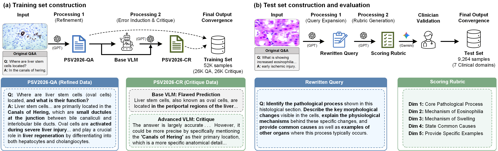
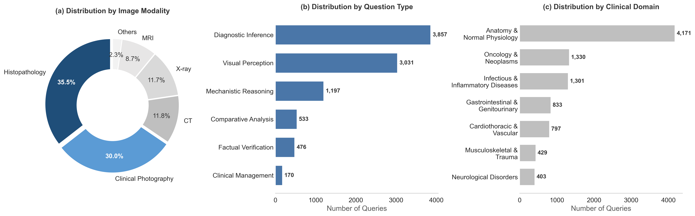
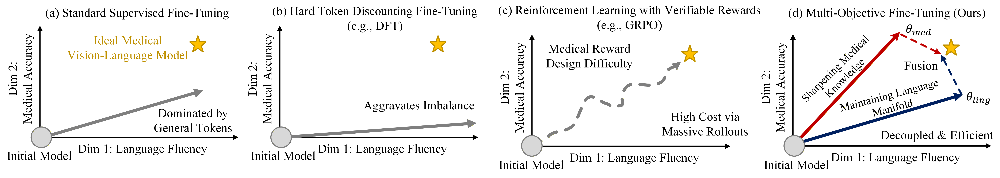
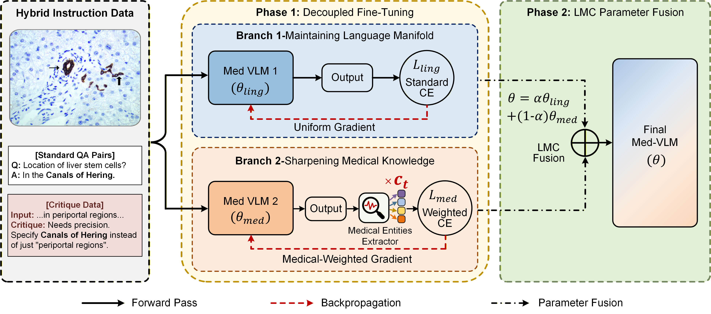
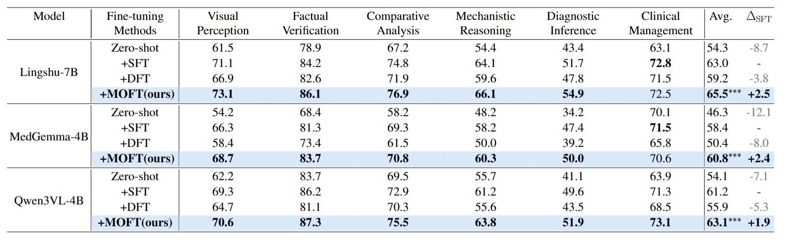
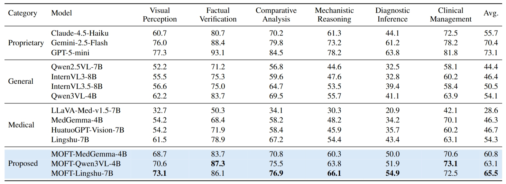
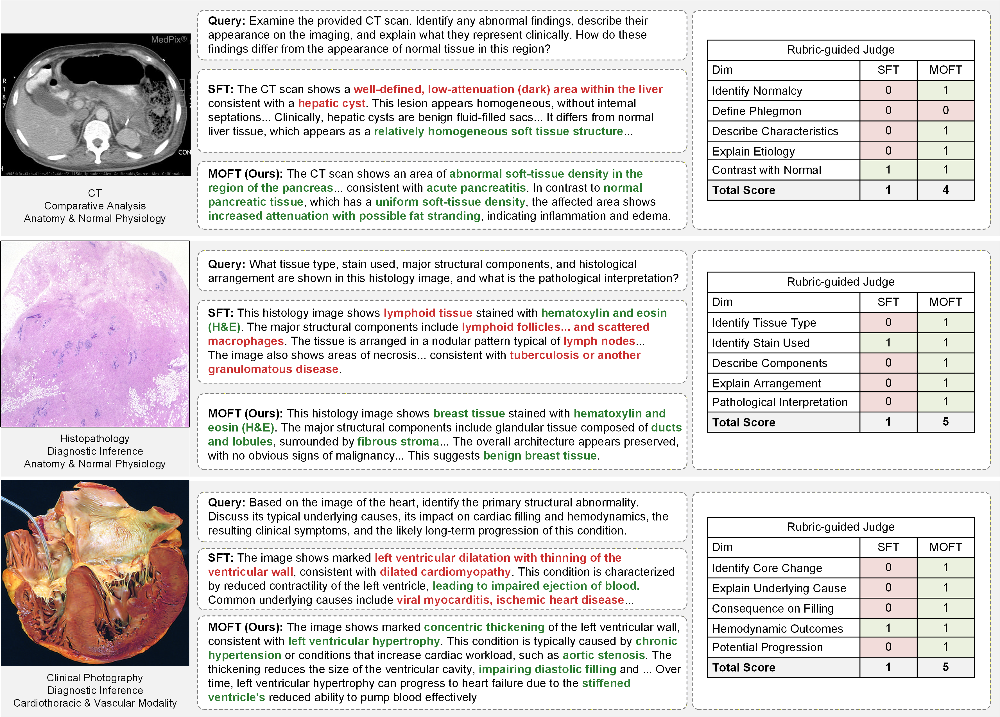

MOFT: Multi-Objective Fine-Tuning for Medical Vision-Language Models

✉ yuchong.li@connect.polyu.hk; fc.jia@siat.ac.cn; cslzhang@comp.polyu.edu.hk
Abstract
Vision-language models (VLMs) have demonstrated immense potential in healthcare, yet ensuring strict adherence to medical factuality remains challenging. Current supervised fine-tuning (SFT) applies an undifferentiated next-token loss that treats all tokens equally. Given the inherent sparsity of medical terms in training corpora, optimization is easily dominated by frequent syntactic tokens. This dilutes learning signals for critical clinical entities and triggers gradient conflicts between linguistic fluency and medical semantic accuracy. To address this, we introduce Multi-Objective Fine-Tuning (MOFT). MOFT decouples training into two independent trajectories for linguistic fluency and medical semantics, then fuses their weights in parameter space via Linear Mode Connectivity (LMC) to circumvent gradient interference. To rigorously evaluate MOFT and enable fair comparison, we further construct PSV2026, a high-quality 52K multimodal dataset. PSV2026 is enriched via critique-based augmentation that exposes models to corrective feedback, encouraging the learning of diagnostic rationale over flat memorization. Extensive experiments validate our approach. On PSV2026, MOFT consistently outperforms SFT across multiple architectures, improving accuracy from 63.0% to 65.5% (+2.5%) on Lingshu-7B, 58.4% to 60.8% (+2.4%) on MedGemma-4B, and 61.2% to 63.1% (+1.9%) on Qwen3VL-4B. On the external OmniAbnormalCT dataset, co-training with PSV2026 significantly elevates baseline performance, and MOFT continuously surpasses SFT across diverse data distributions.
PSV2026 Dataset
PSV2026 is a high-quality multimodal dataset designed to address the simplified queries and noisy alignment common in existing resources like PathVQA, SLAKE, and VQA-RAD, with stronger emphasis on fine-grained spatial structure, anatomical landmarks, and pathological patterns.
Dataset construction
The overall construction pipeline is summarized in the figure below.

Taxonomy and statistics
The test split is described with a fine-grained taxonomy on three axes: image modality, question type, and clinical domain.

Clinical validation
Part 1. Training-set quality. Two physicians compared rewritten PSV2026 triplets against originals (PathVQA, SLAKE, VQA-RAD) in a blinded side-by-side setup (100 random samples). Mean raw agreement 90.2%, Gwet’s AC2 = 0.933.
| Dimension | PSV2026 ↑ | Tie | Original | p-value |
|---|---|---|---|---|
| Accuracy | 27.0 | 69.5 | 3.5 | <0.001 |
| Completeness | 97.5 | 1.0 | 1.5 | <0.001 |
| Clinical utility | 94.5 | 3.0 | 2.5 | <0.001 |
| Linguistic clarity | 95.0 | 2.5 | 2.5 | <0.001 |
| Overall | 96.0 | 1.5 | 2.5 | <0.001 |
Part 2. Query–rubric alignment. Same raters verified that test-set rubrics match their queries (100 samples). 97% fully or partially aligned; weighted Gwet's AC2 = 0.783.
Part 3. LLM-as-judge audit. Same raters reviewed automated scores and rationales against their own judgments (100 samples). 98.5% fully or partially aligned; weighted Gwet's AC2 = 0.864.
Method
Comparison of fine-tuning paradigms for medical VLMs

Overview of the MOFT framework

Results
Quantitative accuracy comparison (%) of different fine-tuning strategies

Benchmark comparison across proprietary, general, medical, and our best adapted model on PSV2026

Qualitative examples of standard SFT and the proposed MOFT

Citation (BibTeX)
@article{moft2026placeholder,
title = {Multi-Objective Fine-Tuning for Medical Vision-Language Models},
author = {Li, Yuchong and Zeng, Xiaojun and You, Caizhen and Wu, Pengbo and Guo, Zixian and Yang, Jian and Jia, Fucang and Zhang, Lei},
journal = {TO BE FILLED},
year = {2026},
note = {BibTeX content placeholder --- replace with official entry.}
}